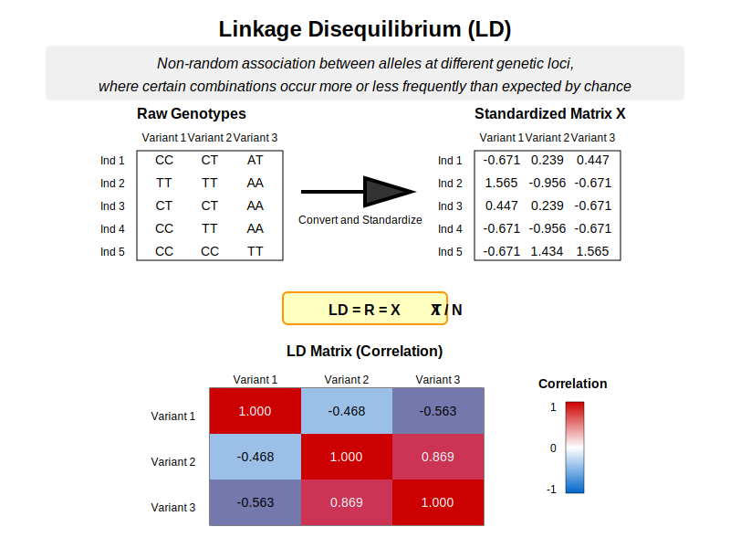

Intuitional Description#
Linkage disequilibrium is the non-random association between alleles at different genetic loci, where certain combinations occur more or less frequently than would be expected by chance if the loci were segregating independently.
Graphical Summary#

Key Formula#
Given the genotype matrix \(\mathbf{X}\) that has been centered (each column has mean 0) and scaled (each column has standard deviation 1), the LD matrix can be computed as: $\( \mathbf{R} = \frac{\mathbf{X}^T \mathbf{X}}{N} \)$
where:
\(\mathbf{X}\) is the centered genotype matrix.
\(N\) is the number of individuals.
When \(\mathbf{X}\) is scaled, the covariance matrix is the same as correlation matrix.
Technical Details#
r (correlation) ranges from -1 to 1, and if it is 1 or -1, it means that the two variants are in perfect LD (markers are perfect proxies for each other). If \(r^2=0\), it indicates that no association between markers.
Interpreting LD Values#
High LD (\(r^2 > 0.8\)):
Alleles at different loci appear together much more frequently than expected
Markers can serve as proxies for each other in genetic studies
Likely physical proximity on chromosome or recent selection
Less recombination between markers
Moderate LD (\(0.2 < r^2 < 0.8\)):
Some association between loci, but not strong enough for perfect tagging
Partial information about one locus given the other
Low LD (\(r^2 < 0.2\)):
Loci segregate nearly independently
May indicate distant physical location or sufficient time for recombination
LD Blocks#
LD blocks are the tegions of the genome with consistently high LD among SNPs.
Characteristics:
Typically separated by recombination hotspots
SNPs within a block are highly correlated and tend to be inherited together
Block size typically ranges from a few kb to >100 kb
Can be visualized as triangular “heat maps” of pairwise LD values
Significance:
Allow efficient tagging of untyped variants using representative SNPs
Reduce genotyping costs by capturing maximum information with minimum markers
Define natural units for haplotype analysis
Inform optimal imputation strategies
Population Variation in LD Patterns#
African populations:
Shorter LD blocks (typically 5-15 kb)
More haplotype diversity
Due to older population age and larger ancestral effective population size
European populations:
Intermediate LD blocks (typically 15-50 kb)
Reflects out-of-Africa bottleneck and subsequent population expansion
East Asian populations:
Often longer LD blocks (can exceed 50 kb)
Due to more recent bottlenecks and founder effects
Isolated populations (e.g., Finnish, Sardinian):
Even more extensive LD
Due to founder effects and genetic drift in small populations
Example#
The example here demonstrates computing a linkage disequilibrium (LD) matrix from genotype data.
Following lectures about genotype coding, we encode the nucleiotides into a numerical matrix and standardize it.
Calculate the correlation between each two variants.
(optional) we show that when \(\mathbf{X}\) is centered and scaled, the correlation matrix is the same as the covariance matrix.
# Clear the environment
rm(list = ls())
# Define genotypes for 5 individuals at 3 variants
# These represent actual alleles at each position
# For example, Individual 1 has genotypes: CC, CT, AT
genotypes <- c(
"CC", "CT", "AT", # Individual 1
"TT", "TT", "AA", # Individual 2
"CT", "CT", "AA", # Individual 3
"CC", "TT", "AA", # Individual 4
"CC", "CC", "TT" # Individual 5
)
# Reshape into a matrix
geno_matrix <- matrix(genotypes, nrow=5, ncol=3, byrow=TRUE)
rownames(geno_matrix) <- paste("Individual", 1:5)
colnames(geno_matrix) <- paste("Variant", 1:3)
alt_alleles <- c("T", "C", "T")
# Convert to raw genotype matrix using the additive / dominant / recessive model
Xraw_additive <- matrix(0, nrow=nrow(geno_matrix), ncol=ncol(geno_matrix)) # dount number of non-reference alleles
rownames(Xraw_additive) <- rownames(geno_matrix)
colnames(Xraw_additive) <- colnames(geno_matrix)
for (i in 1:nrow(geno_matrix)) {
for (j in 1:ncol(geno_matrix)) {
alleles <- strsplit(geno_matrix[i,j], "")[[1]]
Xraw_additive[i,j] <- sum(alleles == alt_alleles[j])
}
}
X <- scale(Xraw_additive, center=TRUE, scale=TRUE)
X
| Variant 1 | Variant 2 | Variant 3 | |
|---|---|---|---|
| Individual 1 | -0.6708204 | 0.2390457 | 0.4472136 |
| Individual 2 | 1.5652476 | -0.9561829 | -0.6708204 |
| Individual 3 | 0.4472136 | 0.2390457 | -0.6708204 |
| Individual 4 | -0.6708204 | -0.9561829 | -0.6708204 |
| Individual 5 | -0.6708204 | 1.4342743 | 1.5652476 |
R = cor(X)
R
| Variant 1 | Variant 2 | Variant 3 | |
|---|---|---|---|
| Variant 1 | 1.0000000 | -0.4677072 | -0.562500 |
| Variant 2 | -0.4677072 | 1.0000000 | 0.868599 |
| Variant 3 | -0.5625000 | 0.8685990 | 1.000000 |
cov(X)
| Variant 1 | Variant 2 | Variant 3 | |
|---|---|---|---|
| Variant 1 | 1.0000000 | -0.4677072 | -0.562500 |
| Variant 2 | -0.4677072 | 1.0000000 | 0.868599 |
| Variant 3 | -0.5625000 | 0.8685990 | 1.000000 |